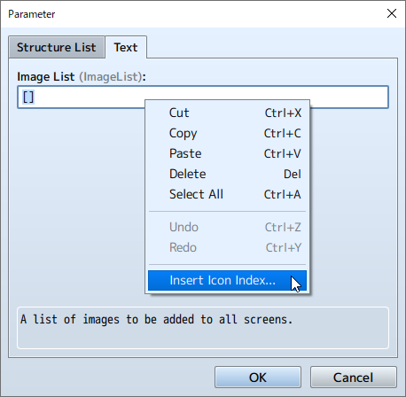

RPG MAKER MZ HELP
How to Use Aid Tools

Plugin Manager
With the [Plugin Manager] tool, accessed by going to [Tools] → [Plugin Manager], you can manage official plugins as well as ones you have created.
When you click on a plugin displayed in the list, a dialog window will appear where you can turn it ON/OFF and edit its parameter values.
Click one of the plugin parameters to open the menu.
You can make edits to plugin parameters on the [File] and [Text] tabs.
When entering parameter values, right-click to show the menu and choose [Insert Icon Number] to display the IconSet Viewer.
Right-click [Search] or press Ctrl+F (Cmd+F for Mac) at the plugins management screen to bring up the search function for the plugins list.

Press Ctrl+F (Cmd+F for Mac) in the [Plugin Settings] window to bring up the search function for plugin help.

Sound Test
With the [Sound Test] tool, accessed by going to [Tools] → [Sound Test], you can test the sound of music and sound files which are included in your project. Music will continue playing even after you close the window, so you can use it to play background music as you are making your game.
The window is divided into 4 tabs: BGM (background music), BGS (background sound), ME (music effects), and SE (sound effects). You can assign music by clicking on the song in the File List of each tab. When you click [Play], the music will begin to play. Click [Stop] to stop the music.
You can adjust the Playback Volume (0 to 100%), Pitch (50 to 150%), and Balance (-100 to 100) by using their respective sliders.
You can also play the music by pressing the space bar.
Event Searcher
With the [Event Searcher] tool, accessed by going to [Tools] → [Event Searcher], you can search events by their switches, variables, or names and display them in a list.
Character Generator
Open this tool by clicking on [Tools] → [Character Generator]. Here you can make character images that can be assigned to actors and events.
Click on the [Male], [Female], or [Kid] tabs to change the screen, and choose the variation, color, and offset for each feature.
Your selected variation and color will be displayed in the [Preview] area.
- Randomize
- Sets all the parts to random.
- Face Image
- Opens the export window for face images.
- Walking Character
- Opens the export window for walking characters.
- Damaged Character
- Opens the export window for damaged characters.
- Battler
- Opens the export window for side-view battlers.
- Save Settings
- Saves the settings of the character created.
- Load Settings
- Loads the saved character settings.
Export Window
- Import
- Loads a base image from a file and inserts the newly made image.
- Export
- Saves the image to a file.
Generate Dungeon
Right click the map data text in the Map List and select [Generate Dungeon] to open.
When you select wall and floor tiles, a maze-like map will automatically be drawn.
The dungeon will be generated on your selected map, so be sure to increase the map size if you would like to make a larger dungeon. If your map size is too small, you will not be able to make a very dungeon-like map.
- Type
-
Choose between [Rooms] and [Maze] types.
When you select [Rooms], a dungeon with rooms connected by passages will be generated.
When you select [Maze], a dungeon with only passages will be generated. - Options
-
- Add Margins
- When selected, margins will be added to the top, bottom, left, and right sides of the map.
- Wide Passages
- When selected, passages will be widened.
- Wall
-
Select tiles to be used on walls.
*Select from the A4 (Wall) tileset being used. - Floor
-
Select tiles to be used on floors.
*Select from the A5 (Floor) tileset being used.
Playtest
You can test play your game at any point during creation using the Playtest feature run from [Game] → [Playtest]. Using playtests, you can see whether or not settings and events will run as intended in the released game.
If you hold the Ctrl key while moving during a playtest, you can pass through tiles that are set to disallow movement.
- Using the Debug Feature
-
The Debug Screen will be displayed when you press F9 on the keyboard during a playtest. You can change switches and the values of variables currently displayed using this screen.
*Press [F9] or the cancel button while in the Debug Screen to return to the Playtest.
To change the value of a variable, select the target switch/variable (S at the top for a switch, V for a variable, and the range of numbers for a number), then press the action button and your cursor will move to the target switch/variable in the list on the right. The ON/OFF values for switches are changed using the action button, and variables are changed using the left and right direction buttons or L/R buttons. - How to Use Developer Tools
-
You can launch Developer Tools by pressing the F8 key while test playing your game.
Developer Tools have the same function as those built-in to Google Chrome. You can check each element of the game constructed in HTML5. - Quitting Playtests
- To quit testing your game, press the X button (close) on the window.
Resource Manager
In the Resource Manager, accessed from [Tools] → [Resource Manager], you can mange the resource files included in your project. The functions of each area of the window and each button are as follows. To use your own original files (including images/audio/etc.) in creating a game, you are required to follow predetermined standards. Please see [Asset Standards] for more information.
- Folder List
- On the left side of the window, a list of folders containing resource files will be displayed. When importing a resource file, choose the folder that corresponds to your purposes.
- File List
- On the right side of the window, the list of files contained in the chosen folder will be displayed.
- Preview
- Displays a preview of the image file chosen under the [File List]. To check a sound file, use the [Sound Test] tool.
- Import
-
Imports project resource files. Click [Import] after choosing the folder location in [Folder List] and then choose the resource file to import.
You can select multiple files to import them at the same time. - Export
- Saves a project resource file outside of the project. The exported resource file will remain in the project after exporting.
- Delete
-
Deletes resource file chosen in [File List]. Be careful, as deleted data cannot be recovered.
You can use the Shift key to select multiple files and delete them all at once. - DLC
-
Imports project resource files from the extra contents stored in the DLC folder*. After pressing the button, the DLC folder will open and the applicable files will be indicated.
*DLC Folder
The DLC contents are stored in a subfolder where the RPGMZ executable file is located. When using the Steam version, after purchasing the DLC from the Steam store, the contents will be automatically added to the DLC folder.
Options
You can open the [Options] window by going to [Tools] → [Options]. Here, you can change the Transparent Color settings as well as the Map Grid settings.
- Transparent Color
- Sets the color to use as the transparent background in the editor.
- Map Grid
- By checking the [Show] box, the Map Editor grid will be activated.
- UI
-
- Theme
- Changes the appearance of the editor.
- Object Selector
-
Modify the UI object selector for selecting event command items and weapons/armor.
[Dropdown] ... Select using a dropdown menu.
[Extended] ... Opens a separate window.
[Smart] ... Automatically chooses UI based on the number of objects.
Tutorials
You can see a list of available tutorials by opening [Tools] → [Tutorials] → [Select Tutorial].
Choose your desired step, then start the tutorial.
Follow the on-screen instructions to proceed through the tutorial.